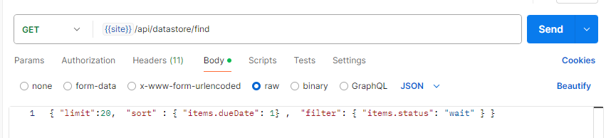
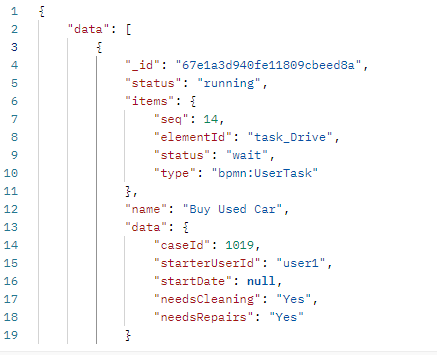

data.find method#
This method allows you to retrieve workflow instances from wf_instances collection.
- Allows of server-side pagination
- It allows filtering, sorting, and projecting fields in the results.
- The results can be paginated using a cursor for efficient data retrieval.
Usage#
const {data,nextCursor,error,totalCount}
= await server.dataStore.find({
filter,sort,projection,limit,after,getTotalCount
});
find parameters#
All the parameters are optional
-
sortSort field can be specified as an object with field name as key and 1 (ascending) or -1 (descending) as values.Sort by `_id` in descending order by default.Examples: {"data.caseId:1} {"items.dueDate:1} {"items.startedAt:-1}}
Note that MongoDB _id field is sequential, so descending order means most recently created instances -
filteris an object that specifies the criteria for filtering the results. Examples: "status":"end" "items.status":"wait" "items.type":"bpmn:UserTask" -
limitis a number that specifies the maximum number of documents to return in the result set. -
projectionis an object that specifies which fields to include or exclude in the returned documents. You need to list all fields that are part of output -
afteris a string that specifies the cursor for pagination, allowing you to retrieve results after a specific document. -
getTotalCountreturns the total number of records. (this requires additional processing, so you may call it only once.)
Important Note: projection must include all fields in the filter and sort.
Find Output#
find returns {data,nextCursor,error,totalCount}
- data: an array of instances fields as specified in the projection
but notice that
itemsfield (if requested) is a single object not an array. - nextCursor: value to be used for next call
- error: any error msg
- totalCount: if requested
Example Code#
The example below shows how to call for find method and the output:
import { configuration, FindParams } from './';;
import { BPMNServer, Logger } from './';
import { EventEmitter } from 'events';
const logger = new Logger({ toConsole: true});
let name = 'find';
const server = new BPMNServer(configuration, logger, { cron: false });
main();
async function main() {
await findAggregation({ name: 'Buy Used Car' ,"items.status": 'wait' }); // has any item in wait status
console.log('--------------------------------------');
await findAggregation({ name: 'Buy Used Car' ,"status": 'end' }); // instances with end status
}
async function findAggregation(filter) {
// benchmark findInstances
console.time('find-instances call');
let insts=await server.dataStore.findInstances(filter, 'summary');
let lastIns=insts[insts.length-1];
console.log('findInstances:',insts.length,lastIns.startedAt,lastIns.data.caseId);
console.timeEnd('find-instances call');
// benchmark find)
// works perfect
let nextCursor = null;
let param:FindParams = {
getTotalCount: true, // get the total count of records
limit: 50, // limit to 10 records per page
filter: filter, // filter by process name
sort: { _id: 1 }, // sort by _id to get the earliest first
projection: { id: 1, data: 1, name: 1, _id:1,startedAt:1,status:1, // columns to return
items: {
$filter: { // filter items to only include UserTask types
input: "$items",
as: "item",
cond: {
$eq: ["$$item.type", "bpmn:UserTask"] // filter to include only UserTask items
}
}
}
}};
for(let i=0;i<100;i++) {
if (i>0)
param.after=nextCursor;
console.time('find-aggregation call');
let res=await server.dataStore.find(param);
if (i===0)
{
console.log('findAggregation total', res.totalCount,'total pages', Math.ceil(res.totalCount/param.limit));
console.log(JSON.stringify(param,null,2));
console.log('-----------------------------------------');
}
param.getTotalCount=false; // do not get the total count again
if (res.error) {
console.log('error',res.error);
return;
}
else if(!res.data)
return;
let first=res.data?res.data[0]:null;
let last=res.data?res.data[res.data.length-1]:null;
nextCursor=res.nextCursor;
console.timeEnd('find-aggregation call');
console.log('findAggregation page:',i+1,'length:',res.data.length,res.nextCursor,first.startedAt,first.data.caseId,last.data.caseId);//.data.length, res.data[0] );
if (i==0) {
console.log('Sample Instance Items:');
first.items.forEach(item=>{
console.log(` item:# ${item.seq} ${item.name} status:${item.status}`);
})
}
if(res.data.length<param.limit)
break;
}
}
Example Output#

